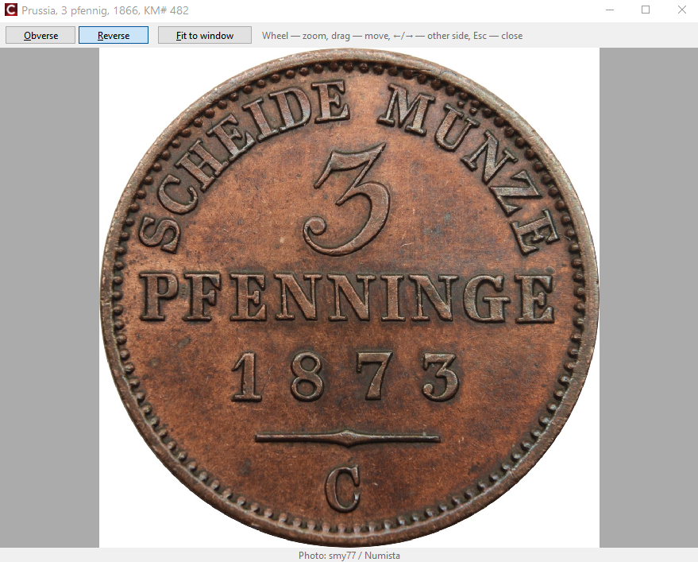

Фото

Фото примірника і фото типу
- Фото примірника — ваш власний знімок вашого примірника.
- Фото типу спільне для всіх примірників монети (зазвичай зображення з каталогу Numista).
- У картці монети видно обидва поруч: ліворуч фото типу, праворуч моє фото — погане фото стертої монети можна одразу порівняти з каталогом.
- У подробицях монети показується фото примірника; без нього — фото типу з позначкою фото типу. Якщо в монети є обидва, кнопка ⇄ у куті аверсу перемикає між вашим фото й каталогом; вибір зберігається, поки ви переходите між монетами.
- У списку монет колонки My obverse/Мій аверс / My reverse/Мій реверс показують фото примірника, а Numista obverse/Аверс Numista / Numista reverse/Реверс Numista — фото типу; див. Головне вікно.
Додавання фото
У картці монети: File.../Файл... (JPEG, PNG, BMP, GIF, TIFF), Paste/Вставити
або перетягніть файл на рамку. Фото зменшуються до 1200 px і зберігаються як JPEG у Photos\.
Фото з Numista
Коли монету пов'язано з Numista, зображення аверсу й реверсу типу завантажуються автоматично як фото типу (зв'язок, оновлення даних каталогу). Ваше власне фото типу ніколи не замінюється.
Зображення каталогу Numista належать їхнім авторам (колекціонерам, аукціонам, музеям). Автор показується скрізь, де програма показує зображення каталогу:
- у подробицях монети — сірий рядок унизу рамки фото: © <автор> / Numista;
- у списку монет — підказка над зображенням у колонках Numista obverse/Аверс Numista / Numista reverse/Реверс Numista;
- у вікні перегляду й картці монети — Фото: <автор> / Numista і ліцензія, якщо автор її вказав (наприклад, CC BY-NC-SA).
Якщо в автора є сайт, клацання по рядку відкриває його. Зображення без автора на Numista позначене Фото: Numista.
Перегляд
Подвійне клацання по фото в подробицях. Якщо в монети є і ваші фото, і фото каталогу, кнопки My photo/Моє фото / Catalogue/Каталог (або ↑/↓) перемикають між ними. Коліщатко миші — масштаб, перетягування — зсув, ←/→ або Пробіл — інша сторона, 0 або Home — за розміром вікна, Esc — закрити.